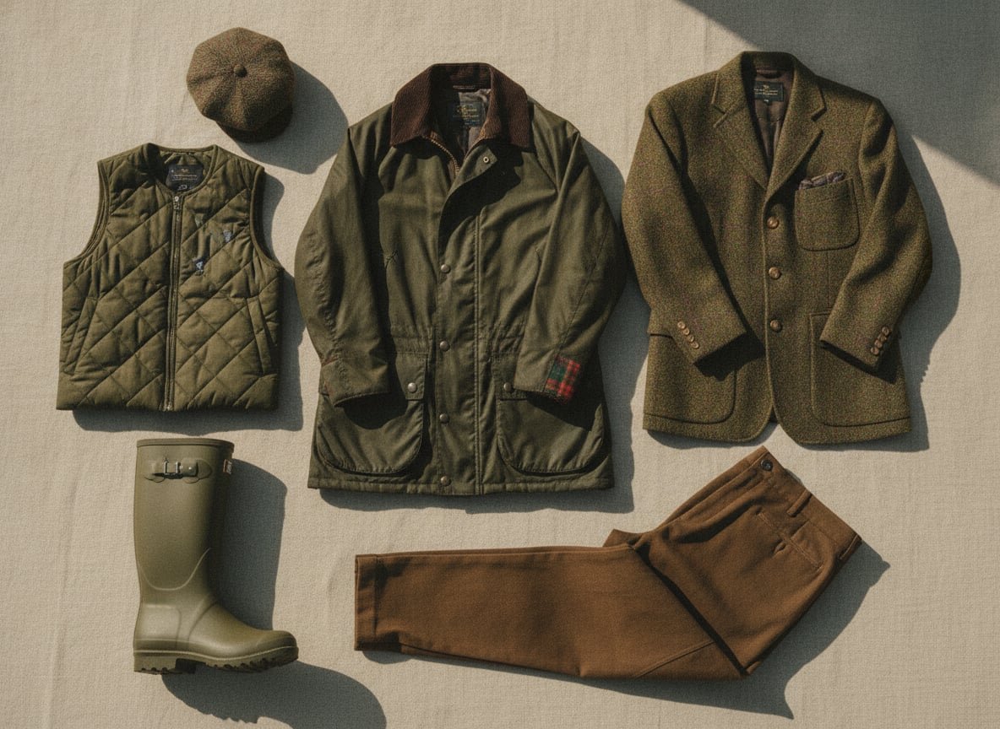
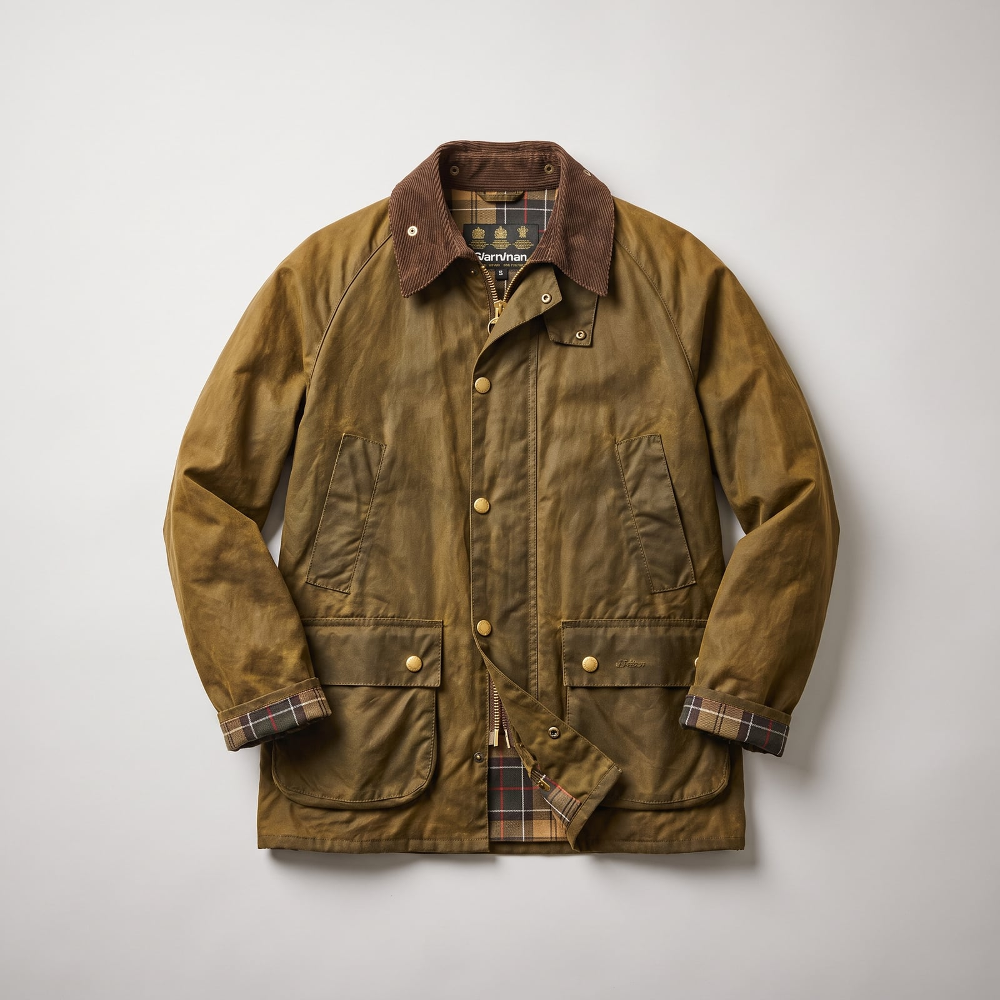
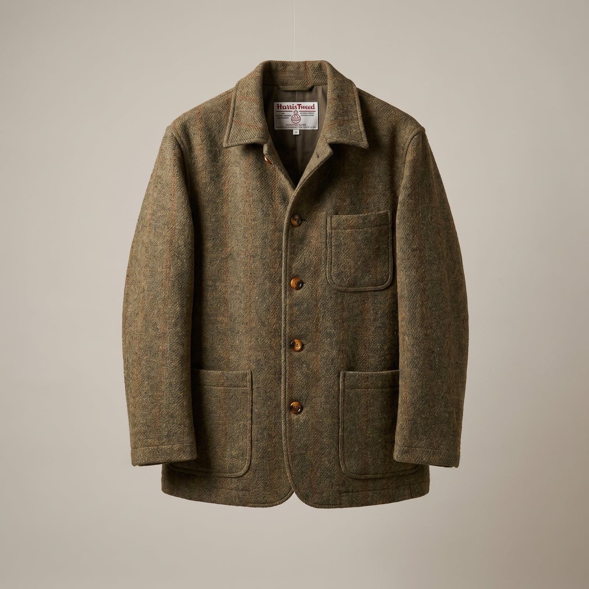
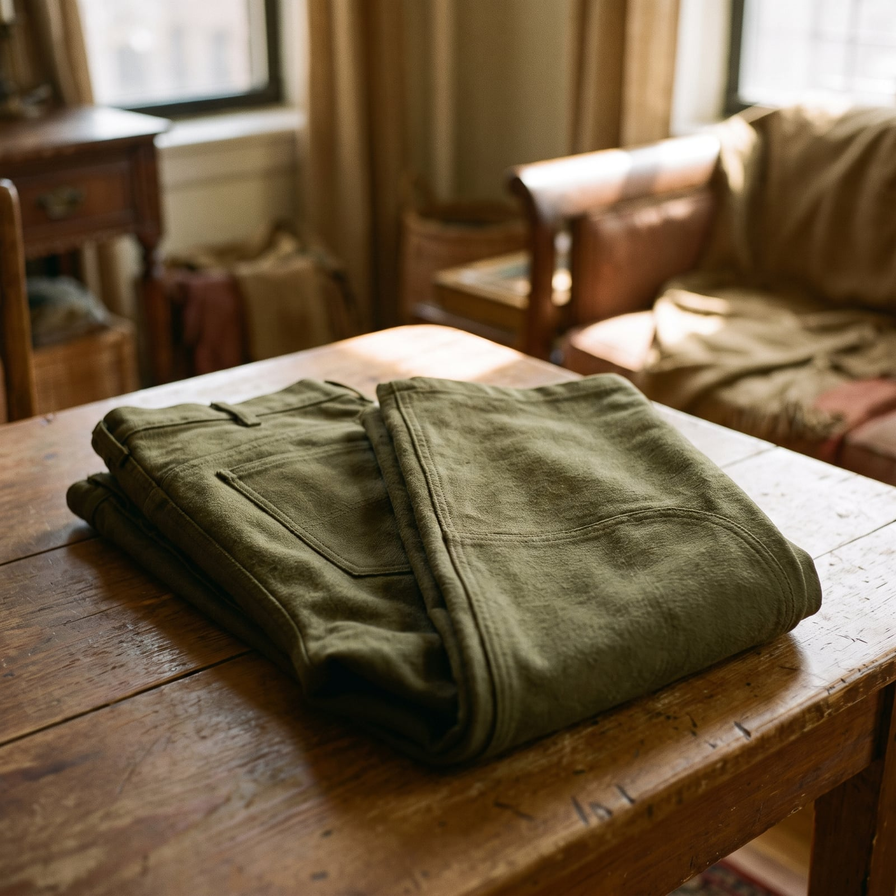
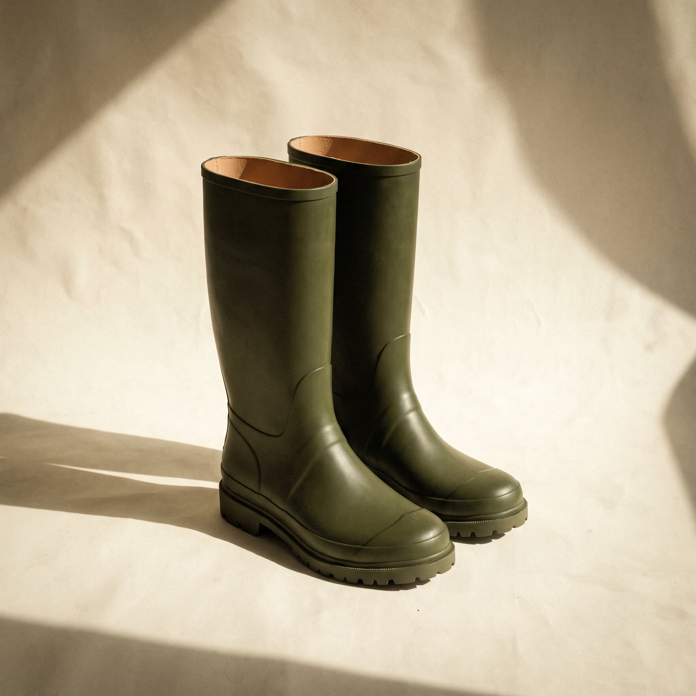
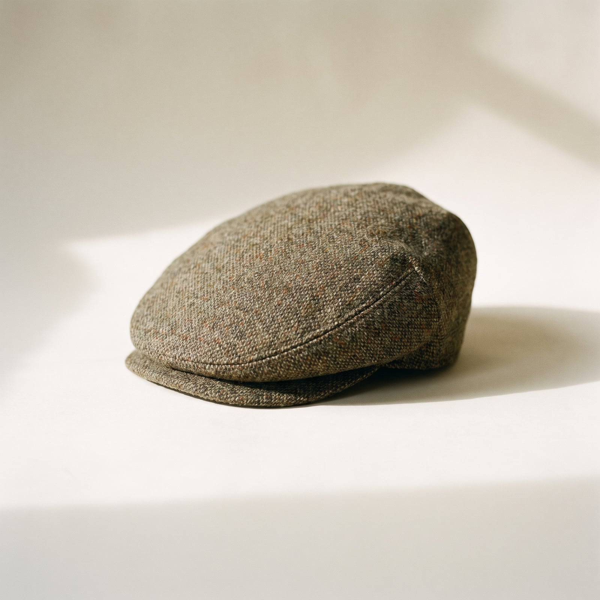

The Countryman
The countryman's closet descends from the practical uniform of the British estate — clothes built for shooting, fishing, and long walks across land that didn't care about your schedule. Barbour began waxing cotton jackets in 1894 for exactly this purpose; tweed itself was developed in the Scottish Highlands, its flecked, muted colors a form of camouflage for gamekeepers who needed to disappear into heather and gorse rather than stand out against it. The American cousin of the tradition — L.L. Bean, Orvis — grew up around the same instinct, just with more rain and fewer grouse.
The trademark features are all functional first and handsome second: a waxed jacket that shrugs off a downpour, moleskin trousers that resist bramble, a flat cap that keeps rain off your collar, corduroy in colors pulled straight from the landscape it was designed to survive. Nothing is fashionable in the conventional sense; everything is correct for its purpose, which turns out to be its own kind of style.
It suits people who feel most like themselves outdoors, or who at least like to dress as though they might be at any moment — there's an unpretentiousness to it that coexists, a little paradoxically, with real particularity about doing things properly. The countryman isn't dressing down. He's dressing for a version of life that happens to take place mostly outside.
- Waxed cotton jackets, re-waxed rather than replaced
- Tweed in muted, landscape-derived colors — heather, moss, bracken
- Moleskin and corduroy trousers built to survive brambles and weather
- Flat caps, wellingtons, and quilted gilets as everyday, not costume
- A palette pulled entirely from the outdoors — olive, rust, oatmeal, loden


The Waxed Jacket
Barbour began waxing cotton for motorcyclists and sailors in 1894, and the Beaufort and Bedale models it refined for country shooting in the mid-20th century have barely changed since — the jacket is meant to be re-waxed for decades, not replaced.
A genuine cotton construction, though not the specific wax formula Barbour uses.
Shop this →The reference jacket the entire category is built around, re-waxable for life.
Shop this →English-made in small runs, often with upgraded hardware and linings.
Shop this →
The Tweed Jacket
Tweed developed in the Scottish Highlands specifically to hide gamekeepers and gillies in the heather — its flecked color was camouflage before it was ever a menswear statement.
Mill-specific Scottish or English tweed, properly country-cut.
Shop this →Cut to measure in a tweed woven specifically for one estate or client.
Shop this →
The Moleskin Trouser
Moleskin cotton — brushed to a dense, suede-like nap — became the countryman's trouser of choice because it resists brambles and thorns the way ordinary cotton twill simply can't.
Cut to measure with reinforcement built in exactly where the wearer needs it.
Shop this →
The Wellington Boot
Named for the Duke of Wellington, who had his army boots remade in softer leather in the early 1800s, the wellington moved to rubber by the century's end and became the default footwear for anyone who actually has to stand in a field.
Genuine rubber construction at an accessible price.
Shop this →Better lining and tread, the reference brand for the category.
Shop this →Hand-finished French rubber boots, still the choice of most actual British estates.
Shop this →
The Flat Cap
The flat cap was working-class headwear for centuries before it drifted upward into shooting and estate fashion — one of the few garments in this wardrobe that moved from labor to leisure rather than the other way around.
London's oldest hatter, fitting the cap to an actual head measurement.
Shop this →Buy the waxed jacket expecting to re-wax it every year or two rather than replace it — the finish is meant to be maintained, and a re-waxed jacket with a decade on it looks better, not worse, than a fresh one. Let the tweed be genuinely heavy and rough; a lightweight, city-appropriate tweed misses the entire point of a fabric bred for actual weather.
Choose boots and a flat cap you're actually willing to get muddy — this wardrobe only works when it looks used for its stated purpose, not staged for it. Let the palette pull entirely from the landscape it's meant for: olive, rust, oatmeal, loden, nothing that would stand out against a hedgerow.
The country-versus-city distinction is the whole game here: a heavy tweed jacket or a waxed coat built to shed rain on a moor reads as costume in an office, the same way a fitted city suit looks absurd and gets ruined on an actual farm. This wardrobe is calibrated entirely to a rural context, and wearing its heaviest pieces somewhere urban is the most common misstep — not because the clothes are wrong, but because they're answering a question nobody in the room asked.
Don't buy the wellington or the flat cap as a fashion accessory kept spotless — both are working garments first, and a pristine version of either reads as a costume shop's idea of the countryman rather than the real thing. The wear is the point.
Linen or lightweight cotton in the same earth tones, the tweed swapped for a simple sport shirt, but the boots and the general readiness-for-a-field stay exactly the same.
The full tweed-and-waxed-cotton system comes together -- a heavier tweed under the waxed jacket, a wool jumper underneath that, and a flat cap that's actually doing thermal work.
This is the wardrobe's whole reason for being -- the waxed jacket, freshly re-proofed, over the tweed, with wellingtons and no umbrella; umbrellas are for people who don't own proper coats.
A heavier shooting coat or a sheepskin-lined version of the usual jacket, insulated wellingtons or proper winter boots, and a wool hat under the flat cap if truly severe.
Tweed gets swapped for a proper suit for church or a funeral, but the countryman's version keeps a slightly heavier cloth and a country shoe rather than a city one -- never fully convinced by town clothes.

The Scottish Highlands, the Lake District, and any coastline with real weather — the appeal is inversely proportional to how many other people want to be there too.
Prefers a walking holiday to a beach one, and packs for rain regardless of the forecast, on the theory that the forecast is more of a suggestion than a promise.
James Herriot for the vet stories, a well-worn field guide to birds or fly-fishing kept by the door rather than on a shelf, and Country Life read for the property listings as much as the articles.
A stack of back issues never quite gets thrown out, on the theory that a piece about hedge-laying or a particular gundog breed might be needed again someday.
Find it on Amazon →Folk that hasn't been electrified much — Nic Jones, early Fairport Convention — played on a system that's older than most of the furniture.
Brass band recordings at Christmas without fail, and a genuine, unironic fondness for a hymn sung properly at a village church.
Listen on YouTube →A boot room that sees more daily use than the front hall, a wood-burning stove that's rarely unlit between October and April, and dogs allowed on the furniture without much debate.
Mud is treated as a fact of life rather than a problem to be solved, and the good rug was chosen specifically because it hides it.
See more on Pinterest →Shooting and fishing, both taken up young and never really questioned since. Long dog walks regardless of weather, timed more by the dog's patience than the owner's.
A genuine, hands-on relationship with a garden or a bit of land — not landscaped so much as maintained, in a way that would be unrecognizable to a professional designer but makes complete sense to the person doing it.